After Rasquiña
Until September 2021, the only account of what went on inside Ecuador's prisons was the official one. No team of journalists had entered the cellblocks without state escort to ask the inmates who was in charge. La Posta went in with the two permissions you need, the state's, which lets you in, and the inmates', which lets you out alive, and came out with a map of who controls each block.
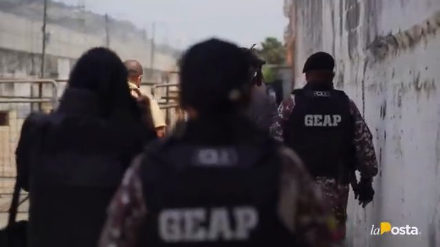
For the first time, the country learned the full names of the gang leaders, how they divided up the prisons and how they divided up territory, based on a police chart of organized crime that the team adapted to protect its sources. The series showed the tentacles of organized crime controlling institutions before the state admitted it.
The official version and what the team saw
What was known
- Police intelligence attributed JL's murder to Los Lagartos with support from Mexican cartels.
- The official version spoke of a war between the Sinaloa cartel and the Jalisco New Generation cartel.
- After the first day of violence on September 28, with 19 dead in Block 5, the government said everything was under control. Then 70 more were killed.
- There was no account from inside the cellblocks other than the authorities'.
What the team saw
- Scanner screens turned off, conveyor belts not running and detectors that failed to find the objects they deliberately left in their pockets.
- Guards with no lethal weapons and no ammunition: the country had about 1,300 when it needed 4,500.
- An inmate with the keys: a twenty-minute wait at the door of Block 2 until the key keeper opened the peephole.
- The leaders on camera: Fito in his cellblock and Junior on the rooftop, under the hole the drone left.
The series showed the tentacles of organized crime controlling institutions before the state admitted it.
To understand the massacres you have to understand one man. Jorge Luis Zambrano, alias JL or Rasquiña, started out as a cellphone thief, went on to become a hitman and, from prison, built Los Choneros, the gang born in Manabí in the late 1990s. Around 2007 it moved into logistics for the cartels, in 2017 it absorbed the former Ñetas, and for a decade it controlled the country's prisons, street-level drug dealing, cooperation with drug trafficking and contract killing. He earned a law degree while in prison. He turned the gang into a corporation: he let his trusted men run their own subdivisions, all under his command. Fito and Javi, now free, founded Las Águilas, based in Manabí. Junior, a hitman from La Troncal who was not a Chonero and met JL in prison, was the armed wing with Los Fatales. Ben 10 and El Hebreo, brothers, took over the Chonekillers in Durán. Willy, a former prison guard, took the Tiguerones. Pipo, Los Lobos in Latacunga. While JL was alive, they coexisted.
He was killed on December 28, 2020, at a shopping mall in Manta, outside prison, where he had been untouchable; he had been released on early parole months earlier. Police intelligence at the time attributed the killing to Los Lagartos with support from Mexican cartels. Fito was supposed to inherit. It was not that simple: each leader had his own way of ruling and none was willing to submit to another. Fito and Junior allied in La Regional prison; Ben 10, El Hebreo, Willy and Los Lobos formed the other side. On February 21, 2021, inmates took guards hostage in La Regional to stop two weapons meant to kill Fito and Junior from getting in; pamphlets announced their deaths with nods to a Mexican cartel. Two days later, on February 23, 79 dead in simultaneous riots. On September 28, 119 dead in the Litoral Penitentiary, the worst prison massacre in the country's history: Junior's Block 3 against El Hebreo's Block 2, separated by a two-and-a-half-meter wall and a fence that can be cut. The official version spoke of a war between the Sinaloa cartel and the Jalisco New Generation cartel. La Posta decided to ask them.
JL's corporation
Jorge Luis Zambrano, JL (Rasquiña to the police)
Boss. He started out stealing cellphones, went on to become a hitman, came to dominate the prisons and earned a law degree behind bars. On early parole from mid-2020. Murdered on December 28, 2020, at a shopping mall in Manta.
- Las Águilas
Adolfo Macías, Fito
Logistics and international connections. Escaped from La Roca in 2013 with 17 others. In 2021 he was serving the last months of his sentence, for the escape, with no drug trafficking conviction; he was studying law remotely. Presumed heir.
- Los Fatales
Junior Roldán, Junior
He was not a Chonero: he met JL in prison, learned to read behind bars and became his armed wing with Los Fatales. A hitman from La Troncal. Suspected of bomb attacks on a police barracks and a prosecutor's office.
- Chonekillers
Ben 10 and El Hebreo
Brothers. Territorial control in Durán and Guayaquil's Zone 8; Ben 10 gives orders from outside prison, El Hebreo was the ringleader of Block 2. Heirs to the Ñeta philosophy.
- Los Tiguerones
Willy
Former prison guard. Runs things from outside prison.
- Los Lobos
Pipo
Latacunga and the central highlands. The police had considered him dead since February 2021 because of a photo. Captured in November 2025 as head of the country's most powerful gang.
On September 30, 2021, two days after the massacre, Boscán published the prologue with a map in hand: the Penitentiary has twelve cellblocks and each is controlled by a gang; La Roca, the maximum-security prison, is empty; in La Regional, Fito and Junior are in charge. Fifteen days earlier, three drones had flown over La Regional without any jammer stopping them; one exploded with C4 over the maximum-security block where Fito and Junior are held and bent the beams above Junior's cell; the other two went down when the inmates pulled out two rifles. It was not a message. It was an assassination attempt, and it set off the slaughter. A 911 call during the riot, which La Posta obtained, shows an inmate begging them to send the law as gunshots ring out. The first day left 19 dead in Block 5. The government said everything was under control. Then 70 more were killed. The war of the previous year and a half had left more than 200 dead in the prisons and at least 1,200 in the streets.
A prison where the inmates are in charge
To get into an Ecuadorian prison you need two permissions: the state's, which lets you in, and the inmates', which lets you out alive. The first was granted in writing by Fausto Cobo's SNAI in June 2021; permission from the four rival gangs came through an operator for Leandro Norero, and Fito and Junior's through a phone call a businessman from the coast made from Boscán's office. On the morning of the visit, about a hundred police officers were carrying out a search, armed and carrying cellphones, with no one keeping track of how many weapons came in and went out. The entry inspection lasted an hour, but the scanner screens were off, the conveyor belts were not running and the detectors failed to find the objects the team deliberately left in their pockets. The guards who escorted them had no lethal weapons, and the ones they did carry had no ammunition; the country had about 1,300 guards when it needed 4,500. At the door of Block 2 they waited twenty minutes for the key keeper, an inmate, to open the peephole. Only the inmates have the keys. Each cellblock is a walled compound five meters high with an armed lookout at the top; when you arrive they ask which block you want to go to, and that is how the prison ended up carved up like a cake.
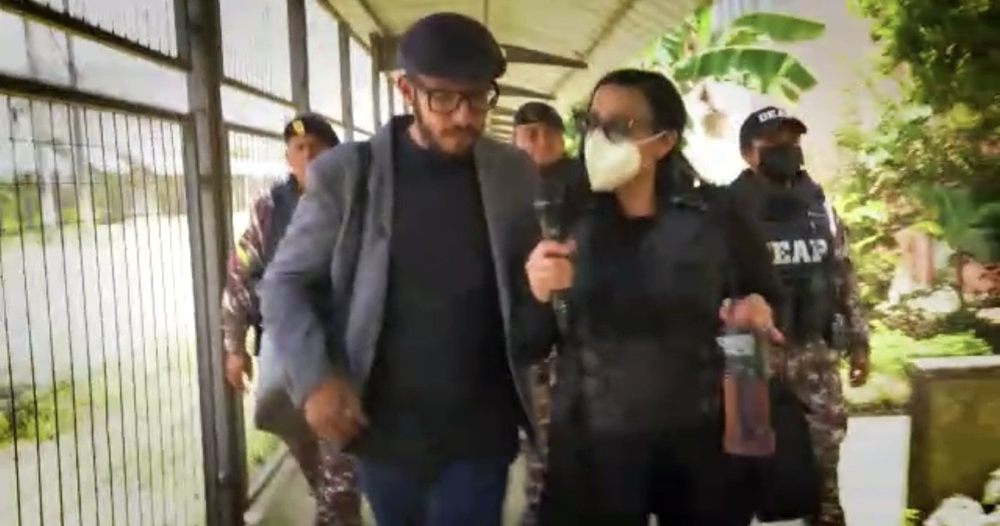
Inside the Penitentiary
The second installment is about the economy. Each cellblock has a commander who sets the rules; each wing, a caporal who controls about 250 inmates and three businesses. The pushers are authorized to sell drugs, cheaper than on the street, at one dollar a dose of H or cripy, which serves as currency. The bank is an inmate who receives between 5,000 and 50,000 dollars a week to lend out at 30 or 100 percent interest. And then there is the store. Cigarettes are banned and bought anyway: 20 dollars a pack. Smuggling in a cellphone costs 300 and using it, 20 a week. The state invested hundreds of thousands in signal jammers, and inside, the right to use a router costs 30 dollars a week; Boscán tested it by tuning in to La Posta from Block 2, the Chonekillers' block. And you pay for what you don't want: the cell, the mattress, razors every week; whoever doesn't pay goes to quarantine, a few square meters for forty inmates who sleep in shifts on the floor. A cellblock brings in between 50,000 and 70,000 dollars a week, about 200,000 a month. There are twelve. In 2024 Boscán calculated the whole system: 20 dollars a week from each of 40,000 inmates, 800,000 a week in internal fees alone.
How a cellblock is run
Commanders
They run the cellblock and set the rules for living together. Everything the commander orders gets bought.
Caporales
Each cellblock has four wings, two upstairs and two downstairs; each wing has a caporal who answers to the commander.
Pushers
They sell drugs inside.
Banks
They receive between 5,000 and 50,000 dollars a week to lend out at 30 or 100 percent.
Stores
They sell bread, crackers, drinks: whatever the state commissary doesn't provide.
Fito received the team in his cellblock: the first time a news outlet spoke with the leader of Las Águilas, who ran La Regional and two blocks of the Penitentiary. Junior, whom the police fear, offered them a Red Bull and cigarettes and talked on the rooftop, under the hole the drone left. When an inmate escaped from La Regional, the state had to ask Fito and Junior to recapture him. The searches, which inmates call raquetas, turn up decoy weapons so the police can say they are doing something; on October 4, La Posta released audio of a police officer tipping off Fito's and Junior's cellblocks about the operation being prepared by commander Tannya Varela. And La Roca is still empty; when the team asked why the ringleaders aren't taken there, the answer was: that would be to the death. Hours after the visit there was a shootout in the Penitentiary that no media outlet reported. Days later came the September 28 massacre.
Twelve cellblocks, two sides
Red: Fito and Junior's cellblocks. Blue: Chonekillers, Lobos, Latin Kings and Tiguerones. One wall apart.
The street and the unpopular option
The third installment heads out to the street. A Friday in a working-class area of Guayaquil: a pedestrian alley with gates whose keys are held by the drug dealers; outside, children play with toy guns, and inside, in a three-by-six-meter room, five young men between 17 and 32 package cripy and H while a newborn sleeps in the only bedroom. In that neighborhood there are at least forty sales points, and each brings in between 100 and 150 dollars a day. The drugs come from San Lorenzo, in Esmeraldas, where guerrillas dominate drug trafficking; a few blocks away a military checkpoint searches everything and finds nothing. There's no age limit for using, they say. At night, in Durán, the Chonekillers show off their armed elite squad, pray in the middle of the street in a ritual inherited from the Ñetas and put a twenty-year-old hitman in front of the camera: he killed for the first time at 18; a killing costs 150 dollars if the target is nobody and more than a thousand if it's somebody.
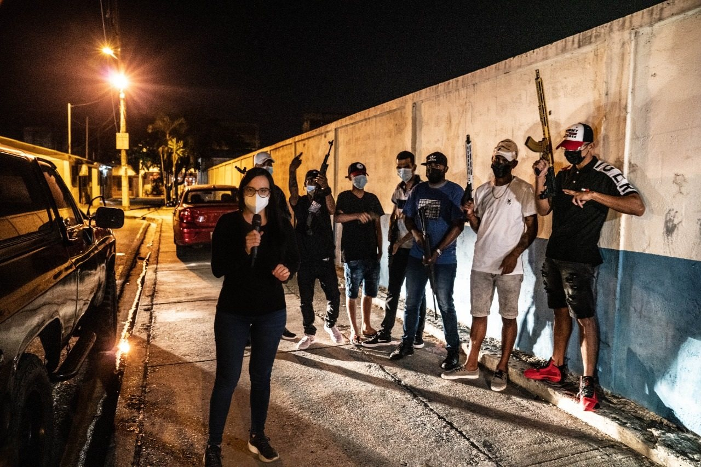
The fourth installment returns to the prisons with the underlying question. Fito denies ordering JL's death. They all deny working for Mexican cartels: I live in Ecuador, I'm not going to let a foreigner impose a regime. In 2008 the Correa government listened to the Ñetas and the Latin Kings, treated them at health centers, enrolled them in university, organized them into work crews and got them to lay down their weapons and leave the streets. Fito and Junior signed a peace agreement, but alone, without their rivals. The leaders offered to hand over the weapons in the prisons if they were separated. The problem is plain to see on the Penitentiary's floor plan: the cellblocks of one side and the other are intermingled, one wall apart. The series' proposal is elementary: separate them with walls or with uniformed officers and open a peace process. Peace processes are never the most popular option.
The system is abandoned and 40 thousand inmates in the country neither work nor study nor have any hope of being able to reintegrate into a society that at times, rather than sentencing them to prison, seems comfortable sentencing them to death.
Peace or Lead, fourth installment, October 26, 2021
How it ended
No one was separated. Three weeks after the fourth installment, Lasso offered mediation by the Episcopal Conference, which called it a good wish. On the night of November 12, 2021, seventeen days after the fourth installment, there was a new massacre in the Litoral Penitentiary: 68 dead according to the Attorney General's Office's first count, a figure the government lowered to 62, and 44 wounded. Boscán reconstructed it on Monday the 15th, with sources inside: days earlier the police had disarmed Block 2, run by Ben 10 and El Hebreo, which had recently been moved; Junior's Block 3 attacked it; 950 inmates took refuge in one wing while most of the dead, more than 40, were burned in Block F, a transitional block where inmates paid to avoid living with the dangerous ones. It was 350 police officers against 2,000 armed men, more than five thousand rounds of ammunition, and the police went in at 2:30 a.m., with the soldiers outside because the previous head of the Joint Command had lobbied the Constitutional Court to keep them from going in. The Lasso government convened all branches of the state and announced a new state of emergency, advice from Colombia, the entry of soldiers into the prisons as special zones and a pacification process led by Nelsa Curbelo with the Episcopal Conference. It never happened. September 2021 had been the most violent month in ten years, 320 deaths compared with 105 a year earlier; Guayas surpassed Sinaloa in its murder rate. The massacres continued in 2022 and 2023. The country ended 2021 with 17.1 homicides per 100,000 inhabitants, and in 2023 it reached 47, the highest rate in Latin America.
The main players went their own ways. Fito escaped from La Regional in January 2024; his escape set off simultaneous riots, bomb attacks and kidnappings of police officers, and Daniel Noboa's government declared an internal armed conflict. He was recaptured on June 25, 2025, in a luxury bunker in Montecristi, and on July 20, 2025, he was extradited to the United States, the first Ecuadorian handed over for organized crime after the 2023 constitutional reform. In February 2026 his hearing in New York was postponed amid reports of negotiations with prosecutors. Junior Roldán was murdered in Colombia in May 2023. Pipo, whom the police had considered dead, was captured in November 2025 as head of Los Lobos, by then the most powerful organization in the country. Four of Fito's bodyguards were convicted in November 2025.
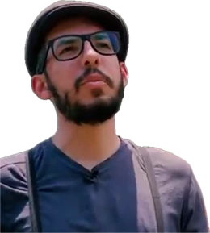
So did the journalists. Starting in October 2021, Boscán received direct threats: a group calling itself Los Fantasmas released a video, armed, against La Posta; he was sent photos of his daughters getting on the school bus; and prosecutor Salazar had him enrolled in the Victim and Witness Protection System. Fundamedios called for immediate action. Boscán said in 2024 that he had received 27 threats of considerable risk. He went into exile in 2023, and in September 2024 he and Mónica Velásquez left the country again. In 2024 the La Posta team went back into the prisons: Turi in February, the operations center of Los Lobos with 971 inmates, and Esmeraldas in June, with 1,518 inmates and more than 150 weapons and 88,000 rounds of ammunition seized, where alias Santos, the caporal, charged each inmate 10 dollars a week and punished them with a whip. That June, Boscán revealed for the first time how he had reached Norero, Fito and Junior. The 2021 thesis has still not been put into practice.
What came after the series
- Nov 12, 202168 dead in the Penitentiary, according to the Attorney General's Office
- Jan 2024Fito escapes, internal armed conflict
- Jun 25, 2025Fito recaptured in Montecristi
- Jul 20, 2025Extradited to the United States
- Nov 2025Pipo, head of Los Lobos, captured
- 2023 and Sep 2024Boscán and Velásquez go into exile
Updated September 5, 2026
Unanswered questions
- Who flew the drones over Fito's cellblock in September 2021
- How much money the Penitentiary generates for the gangs each year
- Why La Roca stayed empty while bodies were being counted
- What happened to Nelsa Curbelo's pacification effort and the peace agreement Fito and Junior signed
Step by step
- 2013The escape from La Roca
Fito and 17 others escape from the maximum-security prison without a shot fired.
- Dec 28, 2020JL is killed
Rasquiña, head of Los Choneros, is murdered in Manta.
- Feb 23, 2021Simultaneous riots
79 dead. Two days earlier, inmates had taken guards hostage to stop weapons meant to kill Fito and Junior.
- Sep 28, 2021The worst massacre
119 dead in the Litoral Penitentiary.
- Sep 30, 2021Prologue
The gangs' structure, two days later.
- Oct 5-26, 2021Four installments
The map, the prison, the street, peace.
- Oct 2021Threats
Los Fantasmas threaten La Posta on video; photos of his daughters. Fundamedios sounds the alarm.
- Nov 12, 2021Another massacre
68 dead in the Penitentiary, according to the Attorney General's Office. The government announces Nelsa Curbelo's pacification effort.
- May 2023Junior dies
Murdered in Colombia.
- Jan 2024Fito escapes
The crisis erupts; Noboa declares an internal armed conflict.
- Sep 2024Second exile
Boscán, already in exile since 2023, and Velásquez leave the country.
- Jun 25, 2025Fito recaptured
In a bunker in Montecristi.
- Jul 20, 2025Extradition
Fito is handed over to the United States.
- Nov 2025Pipo falls
The head of Los Lobos is captured.
Who's who
Andersson Boscán
Direction and reporting.
Mónica Velásquez
Field reporting in prisons and neighborhoods.

Alias Fito
José Adolfo Macías, leader of Las Águilas, a faction of Los Choneros. He spoke on camera in La Regional prison in 2021. He escaped in January 2024, was recaptured in June 2025 and was extradited to the United States on July 20, 2025.
Los Choneros, Lobos, Tiguerones, Latin Kings, Chonekillers
The gangs fighting over the prisons and the streets.
Photos via Wikimedia Commons. Alias Fito: Penitenciaría (CC BY-SA 4.0).
Responses and reactions
- Fundamedios
It urged the authorities to take immediate action over the death threats against Velásquez and Boscán.
- Armed groups
Direct threats against Boscán starting in October 2021, as reported by the press.
- Guillermo Lasso administration
After November 12 it announced a new state of emergency, advice from Colombia, soldiers in the prisons and a pacification process with Nelsa Curbelo and the Episcopal Conference. The gangs were never separated.
The other videos


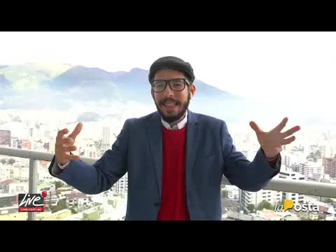
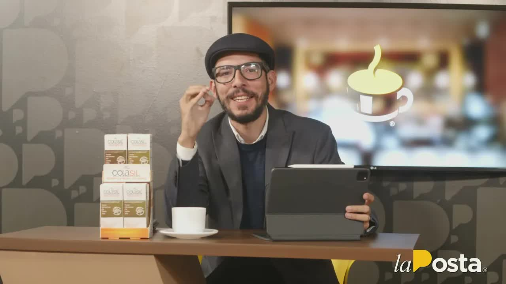
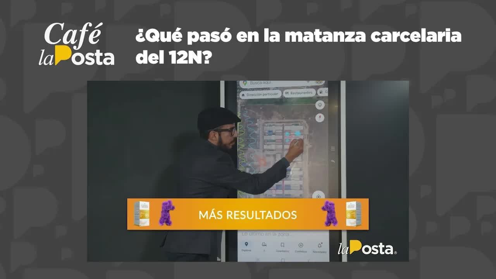
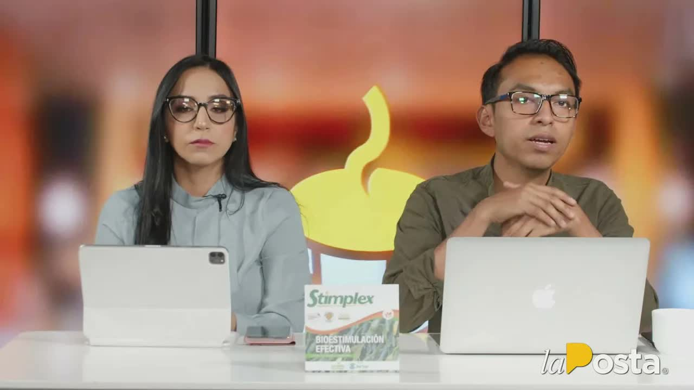
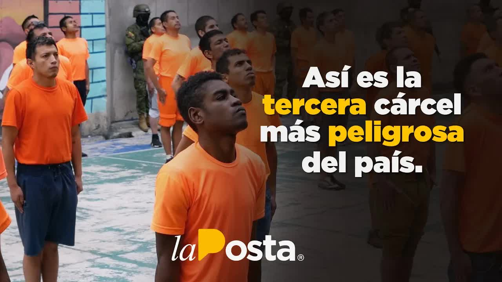
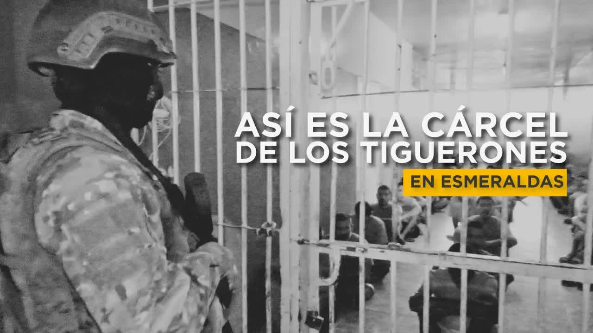
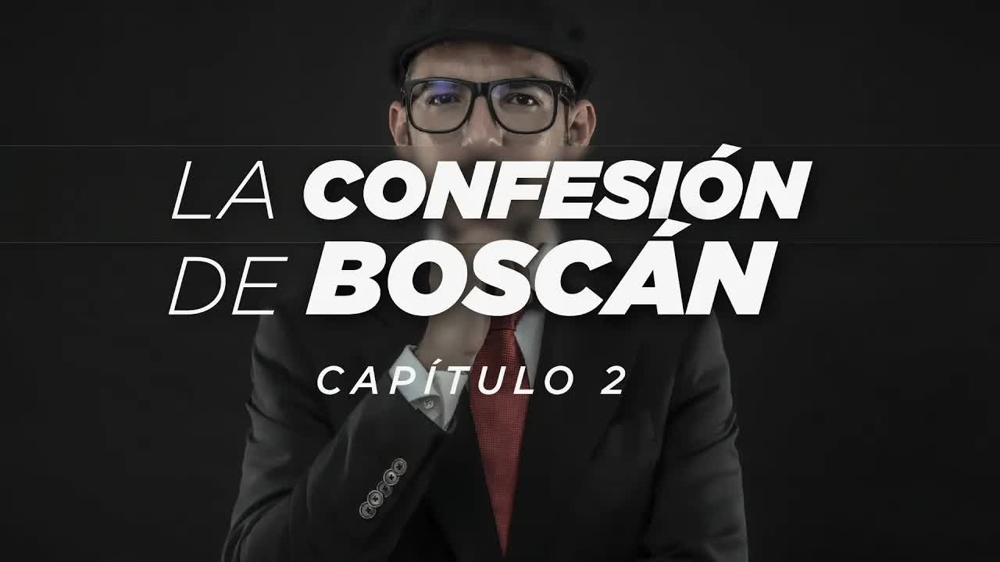
What didn't make it into the story
The transcripts
The structure of criminal gangs in the country's prisons
September 30, 2021 · 2,311 wordswe're going to talk about the prisons like like nobody talks to you about them we're going to tell you a bit of the story I've told you many times how it started the truth this is the map this is what you have to understand this is what is happening right now in Ecuador's prisons there was a man here also jorge luís zambrano was the leader of los choneros rasquiña he was the head of a structure that dominated for more than a …
Read the full transcriptFirst installment: the criminal map and access to the prisons
October 5, 2021 · 1,774 wordsthese are the armed gangs of guayaquil and the coast that is one of the big stash houses of street-level drug dealing in ecuador that's me anderson boscán I'm tuning in to la posta from the prison yes right next to the jammers and that's me mónica velásquez with the elite squads of the organized gangs where no team of journalists has ever been before but before getting here there are many things we have…
Read the full transcriptHow does a prison run by inmates work?
October 12, 2021 · 1,680 wordsalue and you have to be on top of your weeks if you're not in the life impossible a daily 80 dollars a day it's no secret to anyone that the prison system is falling apart but it's one thing to know it and another to see it that's why a la posta team went in with authorization from the inmates who are the ones who really control the prisons in the second installment of this exclusive la posta series you will see the prison system…
Read the full transcriptViolence and crime on the streets
October 19, 2021 · 1,621 wordsdecade in the third installment of this explosive la posta series our news team goes out to the streets with the mandas feliz y das of the country I'm in versión buscan I'm mónica de las tic's it's just another friday and we've been called to a working-class area of guayaquil there are several conditions no names no addresses no chance to show what we've been asked to keep confidential we walk with the team h…
Read the full transcriptThe problem is clear. How do we solve it?
October 26, 2021 · 1,311 wordsthey ordered the killing of our top commander who is captain jl he reported to me we have seen the state's abandonment the gangs' control of the prisons we have documented crime in the streets in the big questions they manage to answer I know how we got here and how we fix the phone in the fourth installment of this exclusive la posta series we talk with the main leaders…
Read the full transcriptCafé La Posta: Massacre in the prisons! How did it all start? And what are the ways out?
02/25/2021 · 9,728 wordscontrol there are serious doubts about police intelligence and its ability to detect something that clearly they had to detect that this was going to kill 80 people in the days and not santero police intelligence with tells you yes this is what I want to go over with you this morning I have an interesting show today I'll be joined by the former interior minister of stanley is for the day of his country former presi…
Read the full transcriptCafé La Posta: Is there a way out of the prison crisis or is all lost?
10/04/2021 · 10,875 wordsit's a pleasure and a joy to be with you every morning I'm jefferson sanguña in a few minutes the hunger are buscan and la money velásquez will also be joining today's show plenty of events to analyze the weekend was pretty busy thanks to marcio palacio greetings from salinas thank you so much to the people who are already tuning in as I was telling you a pretty pretty weekend…
Read the full transcriptCafé La Posta: A peace process in the prisons, is it possible?
11/04/2021 · 12,536 wordswell let's see what we're here for it's been a long stretch recharged energy short week we'll work today and tomorrow this is the dream freddy he is back actually two days of work five days of rest in freddy ehlers's week we're going to kick off november 4 the year of our lord 2021 freshly made coffee the money what service it's been bad from hernández handing out packages on the conscience joining me of cour…
Read the full transcriptWhat happened in the November 12 prison massacre?
11/15/2021 · 1,954 wordswe're going to go over the events that took place on the night of november 12 into the morning of november 13 this is the prison complex of the city of guayaquil here you have the regional prison la roca because up to the cdp the women's prison and here you already know it from the bajo plomo reports it's the most violent prison in the country the litoral penitentiary let's take a screenshot ok last week on wednesday …
Read the full transcriptCafé La Posta: the massacre in the Penitentiary
11/15/2021 · 14,053 wordswhere it has to harmed and that is one part of the concrete solution so we can progressively recover as you say sovereignty where we have to have it ok governor I'm going to give the floor there people any and mónica belhaj is that I have a question for you governor how are you good morning jefferson sanguña de salud on this occasion in one of the very well thank you very much in the latest stateme…
Read the full transcriptWe went inside TURI PRISON, one of the most VIOLENT in ECUADOR
02/09/2024 · 700 wordswe are about to enter the third most violent prison in the country it's in Azuay 15 minutes from downtown Cuenca in turi and it has been the scene of the most inary events in the prisons that some even describe it as hell itself d complained one could lose one's life it really was like that that's how life was 3 years ago 36 inmates were murdered here and according to Ecuadorian police intelligence this center func…
Read the full transcriptEsmeraldas prison | Where the Tiguerones record their songs.
06/01/2024 · 1,289 wordsdo not kill do not steal do not deceive so that le faor in peace This is the Esmeraldas prison it is one of Ecuador's 35 prisons but above all the fourth most dangerous in this country the terrorist group los tiguerones operated here and today we went in to see how it works now here we are greeted not only by the mystery of what was a city sunk in crime but also by the desire to investigate c…
Read the full transcriptBOSCÁN'S CONFESSION | Chapter 2 | How I met Norero, Fito and Jr
06/04/2024 · 3,669 wordsKillers Los Lobos the Latin Kings and the tiguerones he told me there was no need that he already had authorization from all of them that our lives were guaranteed guaranteed what guarantee do I have I asked him my word his word would you do it would you do it would you trust him with your life would you trust him with your wife's life how about your team's life two producers who very much wanted to go back home to see their families why would you do it Fo…
Read the full transcriptTranscripts from each show's automatic captions. They have not been corrected by hand: use them to find a phrase and jump to the exact minute in the video, not as verbatim quotes.